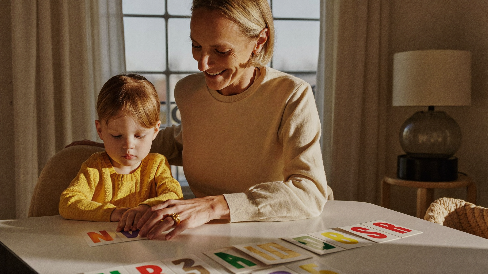

Why Phonics Beats Memorizing Words (The Science of Reading, Simply)
By Leslie Dykstra · Certified Early Childhood Specialist · Williamson County, TN

If you've heard the phrase "science of reading" and weren't sure what it means for your family, you are not alone. The science of reading for parents doesn't require a graduate course. It comes down to one practical truth: the brain learns to read by connecting sounds to letters, and teaching that connection directly and systematically produces stronger readers. As a certified early childhood specialist, this is the foundation I build every lesson on, and I want to explain why it matters in plain terms.
How does the brain actually learn to read?
Reading is not a natural skill the way speaking is. Children learn to talk by being surrounded by language from birth. Reading has to be taught, and the brain needs specific input to do it well.
What decades of research have found is that skilled readers do not memorize the shape of whole words. They decode. Even experienced adult readers process the letters in a word in sequence, they just do it so fast it feels instant. The goal of reading instruction is to make that decoding process fast and automatic — and phonics is how you get there.
When a child learns that the letter S makes the /s/ sound, and that letters blend together to make words, they can apply that knowledge to every new word they encounter. That skill transfers. Memorizing "stop" as a shape only gives you "stop."
What was the older approach, and why did it fall short?
For several decades, a popular reading approach called "whole language" encouraged children to guess at unfamiliar words using context clues — the picture, the first letter, what would make sense in the sentence. The idea was that reading was natural and that children would absorb it much the way they absorbed spoken language.
The problem is that guessing from context is what struggling readers do when decoding breaks down. Teaching it as a strategy trains children to skip the very process that makes reading work. Children who rely on guessing often do fine with simple, predictable books — and then hit a wall when text becomes complex enough that pictures and context can't carry them.
Phonics instruction addresses that wall before it appears.
What does phonics-first instruction actually look like?
Good phonics instruction is direct, sequential, and cumulative. It starts with individual letter sounds and builds in a logical order. Here's a simplified version of the path:
- Individual consonant sounds and short vowels
- Blending three-sound words (CVC words like cat and sit)
- Consonant blends and digraphs (bl-, sh-, ch-)
- Long vowel patterns (make, bite, hope)
- More advanced patterns, syllable types, and morphemes (word parts)
Each step builds on the one before it. A child who is solid at CVC words can move into blends with confidence. A child who skipped early steps often struggles to hold the later patterns in place.
For the full teaching sequence, the post on what order to teach phonics walks through it step by step.
Does phonics mean my child won't learn any sight words?
No. Sight words and phonics work together. High-frequency words like "the" and "said" are worth learning by heart because they appear constantly and some don't follow standard phonics patterns. But that is a narrow category — a few dozen words, not the whole reading process.
A child who has strong phonics skills can decode most words they encounter. Sight words just smooth out the very common exceptions. (If you'd like help choosing which sight words to start with, see the post on sight words for kindergarten.)
How can I support phonics at home?
You don't need to become a reading teacher. Here are a few things that make a real difference:
- Read aloud every day. Even when your child is learning to decode, hearing fluent reading builds vocabulary and comprehension that phonics alone can't give.
- Play with sounds. Rhyming games, clapping syllables, and "I spy something that starts with /b/" are all phonemic awareness — and phonemic awareness supports phonics.
- Let them sound it out. When your child gets stuck on a word, resist the urge to just say it for them. Give them a few seconds and encourage them to try. Then confirm: "Yes — you got it."
- Choose decodable books for practice. Books designed for beginning readers use only the phonics patterns a child has learned so far. They look simple, and that simplicity is the point.
If your child is struggling with reading and you're not sure why, the signs are worth paying attention to. The post on signs your child is struggling to read can help you figure out what you're seeing.
Frequently asked questions
My child's school uses a balanced literacy approach. Should I be worried?
It depends on how it's implemented. If explicit, systematic phonics is part of the daily instruction, balanced literacy can work well. If phonics is minimal or taught incidentally, supplementing at home with a structured phonics program is worth considering. A conversation with the teacher about how phonics is taught can clarify a lot.
My child is a great guesser and reads fine in easy books. Is that a concern?
Possibly. Guessing from context can mask a weak decoding foundation in early grades. When books get harder — more multisyllabic words, fewer pictures — the gap tends to show up. An assessment is the clearest way to see whether the underlying skills are solid.
At what age should phonics start?
Phonemic awareness (playing with sounds) can begin in the preschool years. Formal phonics instruction typically starts in kindergarten, though many children are ready for some letter-sound work at 4. Earlier is fine as long as it's playful and low-pressure.
Want to know where your child stands with phonics?
Every child learns to read differently — and knowing where to focus makes all the difference. Book a free 15-minute conversation with Leslie, or explore the early literacy programs designed for children ages 3–8 here in Williamson County, TN. Little Minds, Big Futures — where every child's potential takes flight.